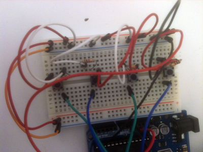
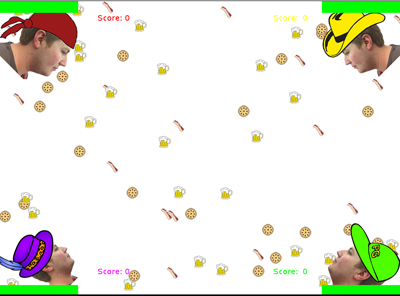
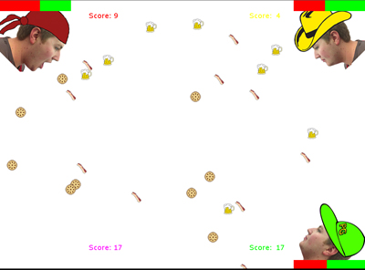
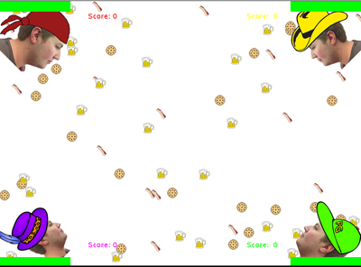
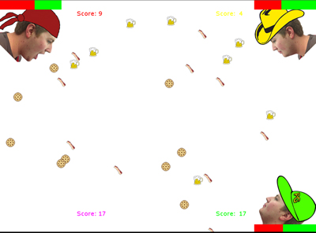
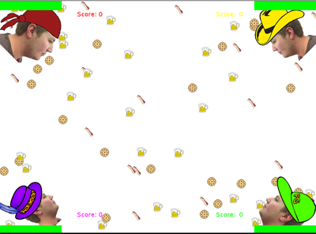
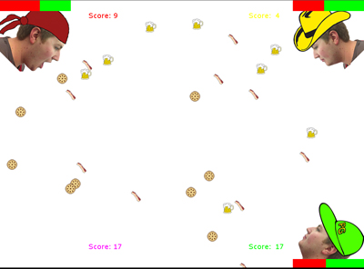

For my game connecting Arduino and openFrameworks, I made Hungry Hungry Owen, which is a play on the popular kids' game Hungry Hungry Hippos.
The game is played by four players using buttons on my breadboard. Pushing a buttons opens Owen's mouth, and he is then able to eat the food flying around the screen. If you leave the mouth open too long, though, your player will disappear off screen and you will lose.
Here are a couple pictures, so that you can get a more visual sense of this project. I also uploaded a video here.



December 2nd, 2012
I totally forgot to add my homework from last week to this blog. Sorry!
Anyway, I did both the bouncing and the circles changing size. I added some lines and transparency to add some surface level visual complexity to the whole thing. Nothing too fancy.
I wasn't 100% sure how to add my code for you to check, so I just put it on GitHub. Let me know if there's a better way to do it. Check it out here.
November 13th, 2012
It's finally OpenFrameworks time! Here's a couple projects I found interesting
I really like this. The technology is amazing, and it's paired with music, which are two things that I really want to learn how to work with. I think this project uses OF to take data from several Kinect sensors that are set up around the band. It then takes that data and exports obj files. Artists later used those files to create really great compositions in 3D programs and AfterEffects. I'm a fan of bridging multiple mediums and tools, so this video blew me away.
Pretty different from the other project, but still really great. I think the gestural part of the program is interesting, but what really stuck out as amazing to me was the flourishes around the edges of the letters, and the way it worked in 3D space. It all seemed very natural and fluid; a great complement to the graffiti.
As for the GitHub part...I changed the viewport in ofGraphics.cpp to be a circle instead of a rectangle. Crazy, right? Link is here.
October 17th, 2012
Totally forgot to update this site yesterday! This week I presented about speakers. They seem to be pretty straightforward...makes sound, and connect the power and ground. For my homework, I made the speaker play Yankee Doodle. I also programmed the lights to randomly flash in time with the music.
October 8th, 2012
I made an LED light animation(?) thing! There are four LEDs inclosed in a metallic tube. The white LED is always on, but you can use buttons to turn on red, green, and blue LEDs. Each LED has its own button, so you have different combinations of light. Video below.
October 2nd, 2012
Here are the links to the various homework assignments for the past couple of weeks.
For the recursion tree project, I tried to think about it logically in my head and just start coding. I tried for about three hours, and gave up. After that I just wrote out the steps before diving into the code. I finished coding the recursion tree in about twenty minutes and realized that pseudocode was a really important part of the process. Here's my pseudocode:
Branch();
Push Matrix
Rotate by specified amount (positive direction)
Draw line
Translate to end of line
Branch()
Pop Matrix
Repeat again, but rotate in negative direction (same amount)
Multiply line length by scaling factor
Only use recursion if line length is greater than certain amount (2-5px)
It was confusing, but I think I got the hang of it. Here's the link.
September 18th, 2012
For the homework, I wanted to experiment with the video library in processing. I've always thought that augmenting live video or using it as an interactive tool are extremely interesting topics.
I ended up making a "light drawing" tool that allows the user to draw on the screen with a small flashlight. The code takes the brightest pixel in the video, which is usually the flashlight, and draws a user-specified brush stroke. It works better in low light, as when there are other light sources visible the brightest pixel is not always the small flashlight. The program is a little fickle, but it ultimately does what I intended it to do.
You can view the code on github here. There's also a short video of the sketch in action, which can be viewed here. The password is lightdrawing.
I wanted to create a rain simulator in Processing, which proved to be somewhat difficult. I had to use an arrayList, because the number of "bits" of rain were varied and sporadic. I thought that dynamically allocating parts of the array was a more efficient way of creating the rain, as you could delete elements when they were no longer visible.
I used the black and white imagery and sound to give the piece a moody and solemn feel. That's how we all feel during a rain storm, right?
September 4th, 2012
Homework for the week, involving matrix transformations, can be found here.
I tried to make something sort of psychedelic and optical illusion-y. Pretty standard stuff, but it was fun to make.
I'm looking forward to this course, because I think it will open up an entirely new area of imagery and interaction that I can use. I feel like a lot of my projects will benefit from code. It's always seemed like a useful tool, but I've never had a chance to really sit down and learn. I can't wait to create some crazy stuff!
 


